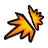
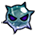
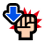
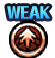
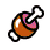
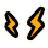
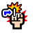

신세계 난이도 패턴
[지] VS 캐럿
Stage 1:
선제 행동:
VS 효과의 게이지를 5 단축
슈퍼 체인지 효과를 5 단축
필살기 턴을 5턴 단축
도주
Stage 3:
초기 상태: 캐럿
약점 타입: 박식형
선제 행동:
6턴 동안 받는 데미지를 90% 감소
3턴 동안 방어력 5000배
3턴 동안 1000을(를) 넘는 데미지를 90% 감소
98턴 동안 일반 공격 이외의 데미지 1
98턴 동안 상태이상 무효
[심] VS 울티
Stage 1:
선제 행동:
격투형, 참격형, 사격형 캐릭터의 VS 효과의 게이지를 5 단축
격투형, 참격형, 사격형 캐릭터의 슈퍼 체인지 효과를 5 단축
격투형, 참격형, 사격형 캐릭터의 필살기 턴을 5턴 단축
도주
Stage 3:
초기 상태: 울티
약점 타입: 사격형
선제 행동:
2턴 동안 우측을(를) 랜덤 1명 날려버리기
10턴 동안 좌측 봉쇄
98턴 동안 일반 공격 이외의 데미지 1
[기] VS 페로나
Stage 1:
선제 행동:
힘 속성, 기 속성, 속 속성 속성의 VS 효과의 게이지를 5 단축
힘 속성, 기 속성, 속 속성 속성의 슈퍼 체인지 효과를 5 단축
힘 속성, 기 속성, 속 속성 캐릭터의 필살기 턴을 5턴 단축
도주
Stage 3:
초기 상태: 페로나
약점 타입: 자유형
선제 행동:
98턴 동안 적의 방어력 감소 이외의 상태이상 무효
6턴 동안 1000을(를) 넘는 데미지를 90% 감소
8턴 동안 방어력 10000배
98턴 동안 일반 공격 이외의 데미지 1
[심] VS 야마토&오타마
Stage 1:
선제 행동:
자유형, 야심형, 박식형 캐릭터의 VS 효과의 게이지를 5 단축
자유형, 야심형, 박식형 캐릭터의 슈퍼 체인지 효과를 5 단축
자유형, 야심형, 박식형 캐릭터의 필살기 턴을 5턴 단축
도주
Stage 3:
초기 상태: 야마토&오타마
약점 타입: 박식형
선제 행동:
8턴 동안 상단의 선장효과 무효
5턴 동안 선원 필살기 봉쇄
8턴 동안 상단 필살기 봉쇄
[공백][힘][기][속][심][지][G][고기][연][폭탄] 슬롯을 [방해][불리] 슬롯으로 변환
4턴 동안 [힘][기][속][심][지] 슬롯을 [불리] 슬롯으로 취급
98턴 동안 일반 공격 이외의 데미지 1
[기] VS 나미 (보스)
Stage 1:
선제 행동:
힘 속성, 심 속성, 지 속성 속성의 VS 효과의 게이지를 5 단축
힘 속성, 심 속성, 지 속성 속성의 슈퍼 체인지 효과를 5 단축
힘 속성, 심 속성, 지 속성 캐릭터의 필살기 턴을 5턴 단축
도주
Stage 2:
선제 행동:
[공백][힘][기][속][심][지][G][고기][연][폭탄] 슬롯을 [방해] 슬롯으로 변환
1턴 동안 슬롯 고정
6턴 동안 공격력 90% 감소
1턴 동안 30000 데미지의 화상
98턴 동안 일반 공격 이외의 데미지 1
3턴 동안 장소를 ‘구역: 적’(으)로 만든다
3턴 동안 [힘][기][속][심][지][和][연] 슬롯으로 공격했을 때 데미지 70% 감소
98턴 동안 지연 무효
Stage 3:
초기 상태: 나미
약점 타입: 타격형
선제 행동: 일당의 체력이 50% 이하일 때
98턴 동안 일반 공격 이외의 데미지 1
6턴 동안 1000을(를) 넘는 데미지를 90% 감소
98턴 동안 지연 무효
6턴 동안 필살기 봉쇄
중간단은(는) 받는 데미지 10배의 기절
선제 행동:
98턴 동안 일반 공격 이외의 데미지 1
6턴 동안 1000을(를) 넘는 데미지를 90% 감소
98턴 동안 지연 무효
6턴 동안 필살기 봉쇄
중간단은(는) 받는 데미지 10배의 기절
10턴 동안 회복 무효
4턴 동안 hit 배리어(20hit)
[기] VS 행콕 (난입)
Stage 1:
선제 행동:
타격형, 박식형, 강인형 캐릭터의 VS 효과의 게이지를 5 단축
타격형, 박식형, 강인형 캐릭터의 슈퍼 체인지 효과를 5 단축
타격형, 박식형, 강인형 캐릭터의 필살기 턴을 5턴 단축
도주
Stage 2:
선제 행동:
필살기 턴을 3턴 되돌리기
[공백][힘][기][속][심][지][G][고기][연][폭탄] 슬롯을 [마비] 슬롯으로 변환
98턴 동안 방어력 감소 무효
6턴 동안 중간단 봉쇄
4턴 동안 20000 데미지의 화상
7턴 동안 남은 체력 1로 버티기 효과
2턴 동안 데미지 배리어(7000000 데미지)
특수 끼어들기: 데미지
1회까지
일당의 체력을 최대 체력의 100%까지 회복
필살기 턴을 1턴 되돌리기
필살기 턴 고정(GOOD 2회)
1턴 경과 후 일반 행동: 1턴 경과 후
10턴 동안 체인 계수 증가량 0.1배
1턴 경과 후 일반 행동: 1턴 경과 후
3턴 동안 일당을(를) 랜덤 1명 날려버리기
1턴 경과 후 일반 행동: 1턴 경과 후
3턴 동안 일당을(를) 랜덤 1명 날려버리기
1턴 경과 후 일반 행동: 1턴 경과 후
3턴 동안 일당을(를) 랜덤 1명 날려버리기
Stage 3:
초기 상태: 보아 행콕
약점 타입: 타격형
선제 행동:
9턴 동안 선원을 마비
98턴 동안 일반 공격 이외의 데미지 1
98턴 동안 상태이상 무효
9턴 동안 상단의 선장효과 무효
8턴 동안 체인 계수가 3 이하일 경우 공격력 90% 감소